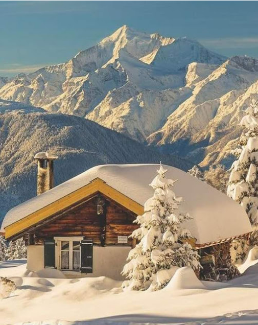

Explore the most beautiful places on Earth with images and maps
Bali | Paris | Santorini | Dubai | New York | Kyoto | Switzerland | Agra
A tropical paradise with beaches, temples, waterfalls, and rice terraces.

The city of love and fashion, famous for the Eiffel Tower and art museums.

Known for white houses, blue domes, and breathtaking sunsets.

A modern luxury city with the tallest building in the world – Burj Khalifa.

The city that never sleeps, home to Times Square and Central Park.

A cultural city with ancient temples, cherry blossoms, and traditional tea houses.

Famous for snow mountains, lakes, and scenic train routes.
Home of the Taj Mahal, one of the Seven Wonders of the World.

© 2025 Travel Destination Guide | Made with ❤ by Himanshu Kumar Vishwakarma